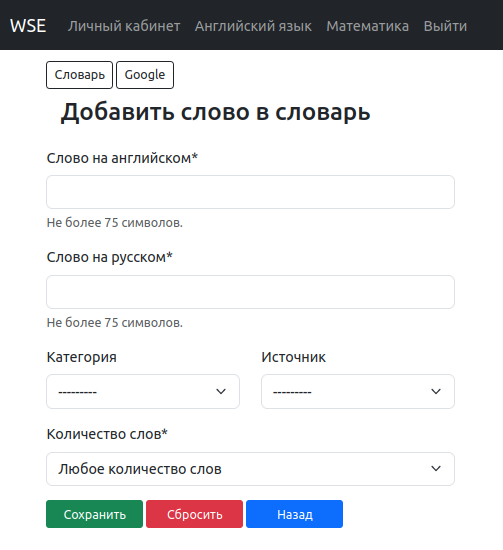

Добавление слова¶
Страница добавления слова¶
Воспользуйтесь панелью меню в верхней части экрана и перейдите в раздел “Английский язык”.
На открывшейся странице, под заголовком “Словарь”, нажмите кнопку “Добавить слово в словарь”.
На открывшейся странице, заполните форму добавления слова.

Рисунок: Страница с формой добавления слова.¶
Поля “Слово на английском” и “Слово на русском” обязательны к заполнению.
Note
Следующие поля формы добавления слова предназначены для удобства формирования списка слов к изучению.
Поле “Категория” и “Источник” заполнятся путем выбора заранее сформированного списка Категорий и Источников. Эти поля по-умолчанию не заполнены выбором, и не являются обязательными.
Поле Категория - желаемая группировка слов. Например:
“Цвета”,
“Животные”.
Поле Источник - группировка слов по месту, в котором встречаются. Например:
“All You Need Is Love” - название песни, перевод слов которой вы хотите выучить;
“Sphinx” - документация библиотеки, к которой часто обращаетесь или которую изучаете.
Поле “Количество слов” тоже является обязательным, подлежит выбору из списка и по-умолчанию выбрано “Любое количество слов”.
Формулировка “Любое количество слов” включает в себя все следующие предусмотренные варианты:
Слово;
Слово сочетание;
Часть предложения;
Предложение.
Группировка слов по критерию “Количество слов” предусмотрена для возможности изучения перевода слова как в самостоятельном переводе, так и в контексте предложения.
Дополнительные элементы страницы¶
Кнопка “Словарь” предусмотрена для удобства перехода в словарь. К примеру, чтоб проверить по фильтру добавлено ли ранее это слово в словарь, встречается ли оно в других словосочетаниях. Об этом подробнее в следующей главе “Словарь”
Кнопка “Google” направить вас на страницу “Google translate”, на которой уже будут заполнены поля перевода слова с английского на русский язык.